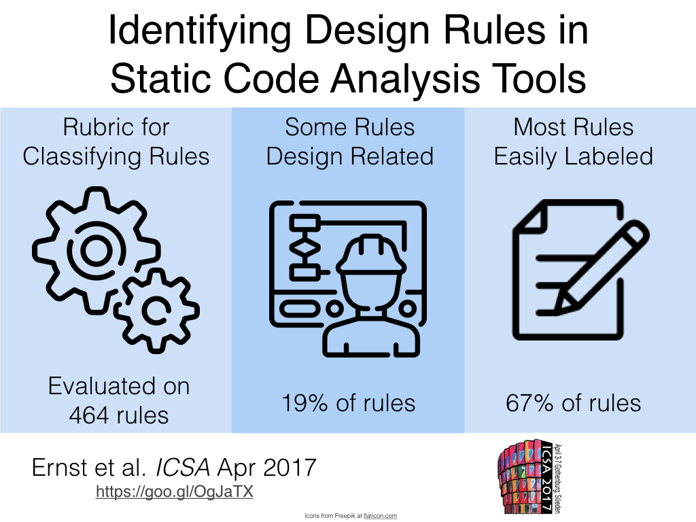
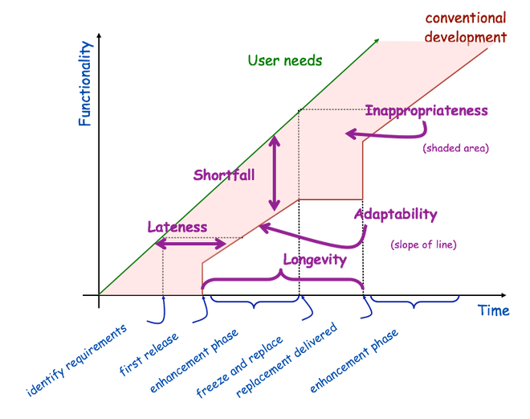

Semantic Werks
Blog
Work With Us
Teaching
Publications and Research
Presentations
Now
Octera Group Page
Personal repo
Categories
All
(46)
complexity
(1)
evidence
(1)
IT
(1)
mmd3
(1)
scrivener
(1)
semantic web
(1)
software
(1)
teaching
(1)
test
(1)
theory
(1)
thesis
(1)
Blog
Scientific Software Development
Structured Bibliography
We’ve been doing a lot of research in my group around scientific software and technical debt, funded by the Sloan Foundation. As part of that work, I’ve written a post about…
Sep 26, 2024
Neil Ernst
The PI as COO
Faculty at a research university wear many different hats. One analogy might be to the executive roles in a company. Now a company tries to make profit, which is usually not…
Jun 3, 2022
The Scientific Method 2021 edition
The typical Science workflow is something like
Jun 3, 2021
On Bots in Software Engineering
There have been a number of categorizations of bots for software development. The main categories seem to be the ones that Erlenhov came up with, which look at bots as…
Apr 15, 2021
Neil Ernst
REFSQ Panel session on Open Data and RE Education
Together with Alessio Ferrari, I organized a panel at the well-regarded conference on Requirements Engineering: Foundation for System Quality, which is a mouthful but really…
Apr 15, 2021
The Triumvirate of Teaching and Work Life Balance
teaching
Most courses have a series of learning outcomes for students. Once you have done the course (and, I assume, gotten a B or some reasonably high mark), then you know how to…
Mar 3, 2021
Running a Mining Challenge Using Kaggle
For the 2nd edition of the Dynamic Software Documentation (DysDoc) workshop, the organizing team wanted to push the boundary on how to engage the community in tool supported…
Sep 30, 2020
Academic Job Searches—A Canadian Perspective
Academic job interview season is wrapping up, so I thought I’d capture the process from the Canada point of view.
May 16, 2019
Bayesian Hierarchical Modeling in Software Engineering
At MSR18 in Gothenburg, I presented my work on using Bayesian inference to set software metrics thresholds. We want to set thresholds because for many software metrics, like…
Jun 16, 2018
Seven Principles of Effective Documentation
There has recently been more discussion about software documentation (or perhaps that’s because I only see what I’m interested in… hard to say). At any rate, it seems a lot…
Jul 17, 2017
Moving to UVic
I’m excited to announce I will be taking up a position this fall as a tenure-track faculty member in the Department of Computer Science at the University of Victoria.
Jun 26, 2017

Visual Abstract attempt
In response to Greg Wilson’s challenge, I did a quick attempt at a Visual Abstract for a recent paper.
May 11, 2017
On Active Learning in Software Engineering
I’ve read 2 papers recently (references) about using active learning to improve classification for software engineering.
May 10, 2017
Thoughts on Amy Ko’s “PL as …” keynote
Amy Ko had a great presentation at a conference on programming languages (PL), that he also video taped for a wider audience.
Nov 4, 2016
Day Hikes
A list of long, high vertical day hikes I have done and wish to do. I think looking back the most common theme to all of them was “bring more water”.
Sep 8, 2016
Columbus’s Heilmeyer Catechism
I have no idea if Columbus had to have his “India Expedition” proposal peer-reviewed, but here is my interpretation of it according to the ever-popular Heilmeyer catechism.
Jul 19, 2016
On SCAM’s new “Engineering Track”
This year SCAM, the Working Conference on Source Code Analysis and Manipulation (located in Raleigh, NC, Oct 2–3 2016) includes an engineering track, as described here. The…
Apr 22, 2016
On Using Open Data in Software Engineering
I recently reviewed data showcase papers for the Mining Software Repositories Conference, and I’m co-chair of the Engineering track (subsumes datasets, tools, approaches)…
Mar 7, 2016
The Marginal Utility of Testing/Refactoring/Thinking
Andy Zaidman had an interesting presentation about test analytics. The takeaway for me was that a) people overestimate their unit test engineering (estimate: 50%, reality…
Jan 21, 2016
A Model of Software Quality Checks
Software quality can be automatically checked by tools like SonarQube, CAST, FindBugs, Coverity, etc. But often these tools encompass several different classes of checks on…
Dec 22, 2015
Requirements, Agile, and Finding Errors
It’s a long held view in the requirements engineering (RE) community that “if only we could do RE better, software development would be cheaper”. Here ‘doing RE better’…
Dec 7, 2015
How Writing Code is Like Making Steel
I saw an interesting keynote from Mark Harman recently, on search-based software improvement. Mark’s lab at UCL also pioneered this idea of automatic code transplants using…
Oct 27, 2015
Garbage In, Garbage Out
My dad had this great cup from one of his vists to COMDEX (ostensibly to keep up with the latest in the tech world, which at the time COMDEX represented). It said “Garbage…
Sep 25, 2015
Running a “Critical Research Review” at #RE15
Today we conducted our first attempt at “Critical Research Reviews” (CRR) at our workshop on empirical requirements engineering (EmpiRE) at the 2015 Requirements Engineering…
Aug 25, 2015
A Field Study of Technical Debt
Over on the SEI blog, I’ve written up our survey results on technical debt.
Jul 27, 2015
Thoughts from a CodeFest
This past weekend was the Steel City Codefest. The idea is that community non-profits present some problem for which an “app” would help them, and coders spend 24 hours…
Feb 23, 2015
Frameworks, libraries, and dependencies
I’ve been doing a little thinking about frameworks lately. They fascinate me as 1) a realization of the vision of ‘pluggable software’ and reusable components desired since…
Jan 20, 2015

The Gap Between User Requirements and Software Capabilities as Technical Debt
One of my favorite graphics is from Al Davis, in 1988. Aside: it is depressing how often we re-invent the wheel in this business.
Jan 15, 2015
Measuring programmer productivity is futile.
(I’ve typically posted long-form entries but so infrequently … )
Jan 6, 2015
Cults of Personality and Software Process Improvement
I’m a fan of the Cynefin framework. I find it a great tool for understanding what type of problem you are trying to solve. The notion of complex/complicated/simple is quite…
Jul 24, 2014
Software research shouldn’t be about the tools
complexity
IT
semantic web
It comes down to essential vs. accidental complexity, as outlined by Fred Brooks. What we research is new ways to ‘nibble’ at the accidental complexity: new languages (GO, Sw…
Jun 13, 2014
Evidence in Software Engineering
This post is spurred by a line in a paper of Walker Royce, son of Winston Royce, he of the “waterfall model” (misunderstood model). He says
Nov 20, 2013
Configuring SONAR with Maven on Mac
I had this issue a few times:
Oct 24, 2013
The Circle, a novel
The Circle is a novel about the tech/social networking industry, where fictional company the Circle plays the role of Twitter, Facebook and Google combined. The topic is…
Oct 16, 2013
13 Great Software Architecture Papers
In the paper “The Past, Present and Future of Software Architecture”, the authors (Philippe Kruchten, Henk Obbink, and Judith Stafford) have a sidebar in which they list…
Sep 24, 2013
Virtual Conferences
Virtual Conferences
Sep 11, 2013
Knowledge and complexity
Somewhat inspired by +Rob England, I tried a mapping of Rumsfeldian terminology to Cynefin (yes, i know this predates the SecDef!).
May 30, 2013
Some Advice on Doing a PostDoc in Software Engineering
Post-doc positions in CS are a growing part of the research landscape, as seen in this figure from the CRA:
May 23, 2013
The fuzzy notion of “business value”
Software development is rife with references to business value, particularly in agile approaches: the Agile Manifesto declares that “Our highest priority is to satisfy the…
Mar 12, 2013
Obtaining a Pennsylvania Driver’s Licence with an H1-B
In case this helps other people:
Mar 2, 2013
Teaching Advanced Software Engineering
The course covers software architecture, with a focus on quality attributes, security, and formal methods. I liked the range of material, even though my expertise is limited…
Jan 25, 2013
A stitch in time…
This blog post from the excellent complexity blog
Godel’s Lost Letter
is on the theory behind branch and bound search. One of my favourite things about this sort of analysis…
Dec 19, 2012
Using GitHub for 3rd Year Software Engineering
This past semester (Winter 2012), I was the instructor for UBC’s CPSC 310: Introduction to Software Engineering. As part of the course, students must complete a large-scale…
Apr 26, 2012
What I learned at UofT
My dissertation is nearing approval (touch wood) and I have started a new position as a Post-doctoral Research Fellow and lecturer at UBC. I wanted to summarize my…
Oct 25, 2011
Writing Complex Latex Documents with Scrivener 2.1 and MultiMarkDown 3
mmd3
scrivener
thesis
I have another post that discusses my approach to writing my thesis using Scrivener. It’s out of date now because I transitioned to MultiMarkdown 3 (MMD3).
Jul 27, 2011
Should we care about evidence-based software engineering?
test
evidence
software
theory
Time for some contrariness. The current rage in the academic software research community is evidence-based practice. It’s in popular magazines, desirable in academic…
Apr 22, 2010
No matching items